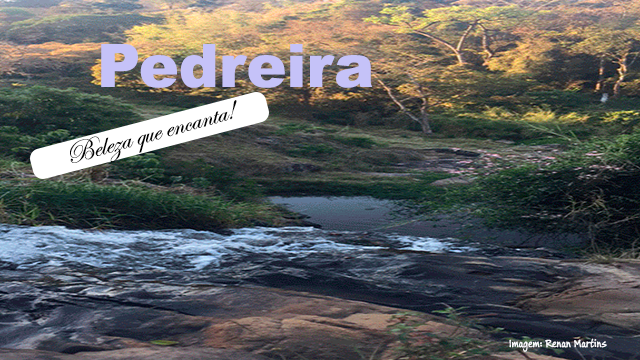
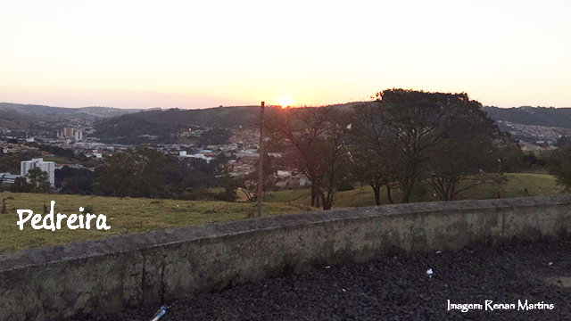
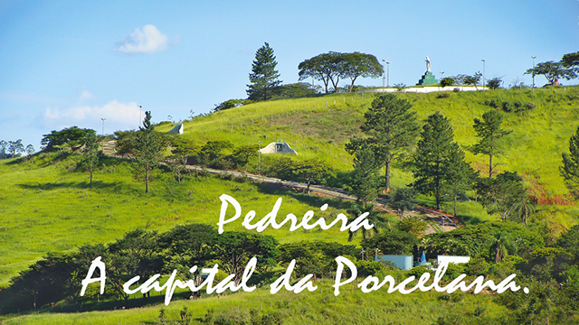
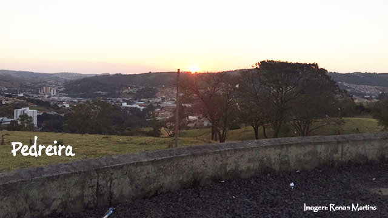
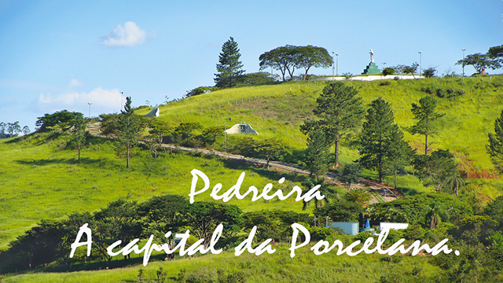
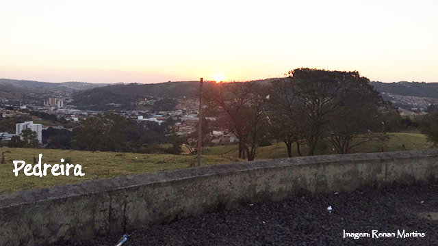
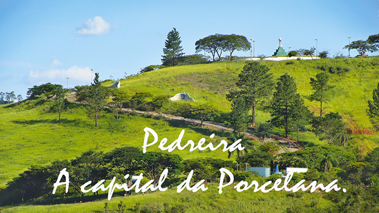

Fotos da cidade de Pedreira
 



As terras que, atualmente, constituem o município de Pedreira, originariamente pertenciam a Amparo e eram propriedade rural, desde o início do século XIX, de João Pedro de Godoy Moreira – avô materno do prefeito de Amparo, capitão Damásio Pires Pimentel e pai do fundador, o coronel (patente não oficial, apenas consuetudinário), João Pedro de Godoy Moreira – o moço.
Em 1887 o fundador adquire de Jose Pedro Arruda gleba de sua fazenda Santa Ana e a anexa à sua “Fazenda Grande". A partir do loteamento e arruamento de parte de suas terras, nasce, junto ao rio Jaguari, a Vila de Pedreira no ano de 1889.
Localizada no Circuito das Águas Paulista, a cidade é conhecida como “Capital da Porcelana” devido a sua forte economia ter sido baseada na venda de artigos de porcelana. Com mais de 500 lojas especializadas na venda desses produtos instaladas em pontos de fácil acesso, os lojistas atendem ao público inclusive nos finais de semana e feriados.
No comércio da cidade é possível encontrar: louças, porcelanas, vidros, artigos em madeira, alumínio, gesso, resina, peças artísticas, utilitárias e de decoração e lembranças para aniversário. Além das Compras, Pedreira tem suas atrações turísticas, como: Zoobosque, Complexo Turístico Morro do Cristo, Museu Histórico, Museu da Porcelana, Feira de Arte e Artesanato.
O Complexo Turístico do Morro do Cristo retrata as Estações da Via-sacra, chegando finalmente à imagem do Cristo Redentor de onde se pode avistar toda a cidade.
Em Pedreira, o turista poderá visitar o monumento da Revolução Constitucionalista de 1932, local onde os soldados implantaram suas trincheiras. Na cidade, vale a pena conhecer outros pontos como: a Casa de Coronel João Pedro de Godoy Moreira, a Igreja Matriz de Santana, o Museu da Porcelana, a Casa do Padre Alexandrino, e as Capelas de Nossa Senhora da Conceição e Bom Jesus.

